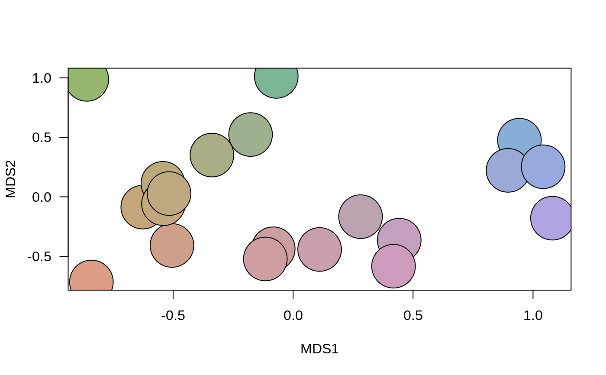

A function to generate colors in Hue-Chroma-Luminance colour scheme for mapping phyloregions.
hexcols(x)
| x | An object of class |
|---|
A range of discrete colors differentiating between phyloregions in terms of their shared relationships.
Barnabas H. Daru darunabas@gmail.com
#>#>#>#> 1 2 3 4 5 6 7 8 #> "#DB9D86" "#CEA08A" "#CB9FA2" "#CF9EA2" "#C5A67A" "#BBA97B" "#C2A77F" "#BBA3B2" #> 9 10 11 12 13 14 15 16 #> "#C99FAC" "#BEA87F" "#AAAD86" "#C3A0BC" "#CD9CBC" "#87AFD6" "#9AAAD6" "#B2A2E1" #> 17 18 19 20 #> "#94B66D" "#9EB090" "#7CB697" "#96AADF"